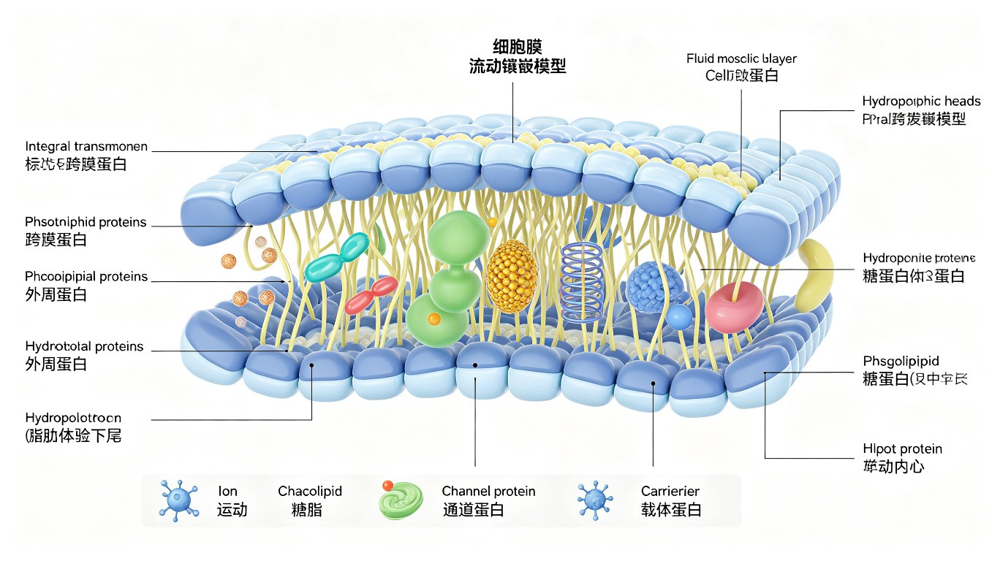

细胞膜概述
细胞膜（cell membrane / plasma membrane / plasmalemma）是包围在细胞表面的一层薄膜，厚度约 7~8 nm。细胞膜是细胞与外界环境之间的选择性屏障，维持细胞内环境的稳定。细胞膜的基本结构是脂双层（lipid bilayer），其中镶嵌有蛋白质分子，并含少量糖类。
细胞膜的主要功能：
- 屏障功能：分隔细胞内外的物质，维持细胞内环境的稳定组成
- 选择性通透：控制物质进出细胞（被动运输、主动运输、胞吞/胞吐）
- 信号转导：膜受体接收外界信号，将信号跨膜传递到胞内
- 细胞识别：膜表面的糖蛋白和糖脂参与细胞间识别（如免疫识别、组织相容性）
- 细胞连接：相邻细胞通过膜蛋白形成连接结构（紧密连接、桥粒、间隙连接）
- 酶活性：某些膜蛋白本身就是酶（如腺苷酸环化酶、Na⁺/K⁺-ATPase）
流动镶嵌模型 (Fluid Mosaic Model)
流动镶嵌模型（fluid mosaic model）由 S.J. Singer 和 G.L. Nicolson 于 1972 年提出，是目前公认的细胞膜结构模型。该模型的核心观点：
- 脂双层构成膜的连续骨架：磷脂分子以其亲水头部朝向膜两侧的水相环境，疏水尾部朝向膜内部，形成稳定的脂双层结构。脂双层是二维流体——磷脂分子可以在单层内自由侧向扩散。
- 蛋白质镶嵌在脂双层中：膜蛋白以不同方式与脂双层结合——有的贯穿整个脂双层（跨膜蛋白/整合蛋白），有的附着在膜表面（外周蛋白），有的通过共价连接的脂质锚定在膜上（脂锚定蛋白）。蛋白质在膜中也可以侧向运动。
- 膜是不对称的：膜两侧的脂质组成和蛋白质组成不同——这是膜功能的分子基础。
- 膜是动态的：脂质和蛋白质都在不断运动（侧向扩散、旋转、翻转等），膜不是静态结构。
历史模型对比：Gorter 和 Grendel（1925）——脂双层假说；Davson 和 Danielli（1935）——"三明治"模型（蛋白质-脂双层-蛋白质，蛋白质覆盖在脂双层表面）；Robertson（1959）——单位膜模型（unit membrane）；Singer 和 Nicolson（1972）——流动镶嵌模型。后续补充：脂筏模型（lipid raft model，Simons 和 Ikonen 1997）。

膜脂的组成与功能
细胞膜脂质主要包括三大类：磷脂（phospholipid，占膜脂 50~70%）、糖脂（glycolipid，占膜脂 2~10%）和胆固醇（cholesterol，动物细胞膜中占膜脂 20~25%）。
磷脂的分类：
- 甘油磷脂：磷脂酰胆碱（PC）、磷脂酰乙醇胺（PE）、磷脂酰丝氨酸（PS）、磷脂酰肌醇（PI）、心磷脂（CL）。PC 是含量最丰富的膜磷脂。
- 鞘磷脂：以鞘氨醇为骨架，在神经细胞髓鞘中含量丰富。
胆固醇在膜中的作用——"双向调节"膜流动性：胆固醇的刚性甾环插入磷脂分子之间：低温时阻止脂肪酸链紧密堆积（维持流动性），高温时限制脂肪酸链的过度运动（降低流动性）。胆固醇使膜形成一种介于凝胶态和液晶态之间的"液态有序相"（L₀），是脂筏的结构基础。
膜脂的不对称分布是细胞膜的重要特征：
- 外层（外小叶）：富含 PC 和鞘磷脂
- 内层（内小叶）：富含 PE、PS 和 PI
- PS 的负电荷使质膜内表面带净负电荷，这对许多膜蛋白的定位和功能至关重要
- PS 从内层翻转到外层是细胞凋亡的早期信号——"eat me"信号，被巨噬细胞的 PS 受体识别
维持膜脂不对称性的酶：翻转酶（flippase）——将 PS 和 PE 从外层翻转到内层（ATP 依赖）；絮乱酶（scramblase）——非特异性双向翻转，在血小板活化时被激活，使 PS 暴露于细胞表面，促进凝血。
膜蛋白的类型与功能
膜蛋白是细胞膜功能的主要执行者，占膜总质量的约 50%。根据与脂双层结合的方式，膜蛋白分为三大类：
- 整合膜蛋白（integral membrane protein）：部分或全部嵌入脂双层的疏水内部。跨膜蛋白是整合蛋白的一种，其跨膜区通常为 α-螺旋（单次或多次跨膜）或 β-桶（见于线粒体和叶绿体外膜、革兰阴性菌外膜）。跨膜蛋白需用去垢剂（detergent）才能从膜中溶解出来。
- 外周膜蛋白（peripheral membrane protein）：不嵌入脂双层，通过静电作用和氢键附着在膜表面（与整合蛋白或膜脂的极性头部结合）。高盐或碱性 pH 即可将其从膜上洗脱。
- 脂锚定蛋白（lipid-anchored protein）：蛋白质通过共价连接的脂质分子锚定在膜上。包括 GPI 锚定蛋白（GPI anchor，连接在质膜外层）、豆蔻酰化/棕榈酰化蛋白（连接在质膜内层）、异戊二烯化蛋白（如 Ras 蛋白，法尼基化或香叶基香叶基化）。
红细胞膜骨架与血影蛋白
红细胞膜骨架（erythrocyte membrane skeleton）是研究最深入的膜骨架系统，为红细胞提供机械强度和弹性，使其能通过直径小于自身的毛细血管（挤压变形后恢复双凹碟形）。
红细胞膜骨架的主要蛋白成分：
- 血影蛋白（spectrin）：αβ 二聚体（α 链 ~280 kDa，β 链 ~246 kDa）反向平行排列形成四聚体（~200 nm 长）。血影蛋白是膜骨架的主要结构蛋白，占总膜蛋白的 25%。
- 肌动蛋白（actin）：短纤维（~14 个单体），与血影蛋白四聚体的末端结合，形成网络节点。
- 锚蛋白（ankyrin）：将血影蛋白-肌动蛋白网络连接到带 3 蛋白（band 3，阴离子交换蛋白 AE1）。
- 带 4.1 蛋白（band 4.1）：增强血影蛋白与肌动蛋白的结合，并连接血影蛋白网络到血型糖蛋白（glycophorin）。
临床意义：遗传性球形红细胞增多症（hereditary spherocytosis）——血影蛋白或锚蛋白缺陷导致膜骨架不稳定，红细胞变为球形（而非双凹碟形），脆性增加，易被脾脏破坏，导致溶血性贫血。
膜的物质运输
被动运输（passive transport）：顺浓度梯度，不消耗代谢能（ATP）。
- 简单扩散（simple diffusion）：小分子非极性物质（O₂, CO₂, N₂, 乙醇）和 H₂O 直接穿过脂双层。速率与物质的脂溶性正相关。
- 协助扩散（facilitated diffusion）：通过通道蛋白或载体蛋白介导。通道蛋白（如离子通道、水通道蛋白 aquaporin）形成亲水孔道；载体蛋白（如 GLUT 葡萄糖转运蛋白）经历构象变化。协助扩散具有饱和性（载体蛋白数量有限）、专一性、可被抑制剂阻断。
主动运输（active transport）：逆浓度梯度，需消耗代谢能（ATP 或离子梯度）。
- 原发性主动运输：直接利用 ATP 水解供能。如 Na⁺/K⁺-ATPase（钠钾泵，每水解 1 ATP 泵出 3 Na⁺、泵入 2 K⁺）、Ca²⁺-ATPase（钙泵，SERCA 和 PMCA）、H⁺-ATPase（质子泵，胃壁细胞和溶酶体）。
- 继发性主动运输：利用 Na⁺ 梯度（由 Na⁺/K⁺-ATPase 建立）的势能驱动其他物质的逆浓度梯度运输。如小肠上皮细胞的 Na⁺/葡萄糖同向转运体（SGLT1）。

补充内容
补充知识点——以下内容整合自教师讲义OCR文字和大学教材，涵盖竞赛高频考点。
细胞学说与经典实验回顾：细胞生物学的发展离不开经典实验。Avery-MacLeod-McCarty 实验（1944）证明 DNA 是转化因子（肺炎链球菌转化实验）；Hershey-Chase 实验（1952）用 ³²P 标记 DNA、³⁵S 标记蛋白质，确证 DNA 是遗传物质；Meselson-Stahl 实验（1958）用 ¹⁵N 密度梯度离心证明了 DNA 半保留复制。这些实验是分子生物学的奠基石。
竞赛重点记忆：Gorter 和 Grendel（1925）从红细胞中提取脂质，铺展成单分子层，发现其面积恰好是红细胞表面积的 2 倍，从而提出脂双层假说——这是细胞膜结构研究的起点。Frye 和 Edidin（1970）的人-鼠细胞融合实验（用荧光标记抗体追踪膜蛋白分布）证明了膜蛋白可以在脂双层中侧向扩散，为流动镶嵌模型提供了关键实验证据。
显微镜技术里程碑：光学显微镜分辨率极限约 0.2 μm（受可见光波长限制）；电子显微镜分辨率可达 0.2 nm（透射电镜 TEM 观察内部结构，扫描电镜 SEM 观察表面形貌）；荧光显微镜（包括共聚焦显微镜 confocal）可标记特定分子在细胞中的定位；冷冻蚀刻技术（freeze-fracture）是观察膜蛋白跨膜分布的关键技术——在脂双层中部断裂，暴露出膜内蛋白颗粒。
本节必背考点
- 流动镶嵌模型：Singer & Nicolson (1972)。脂双层是二维流体骨架，蛋白质镶嵌其中。膜是动态的、不对称的。
- 膜脂三类：磷脂（PC/PE/PS/PI/鞘磷脂）、糖脂（仅外层）、胆固醇（动物细胞膜，双向调节流动性）。
- 膜脂不对称性：外层 PC + 鞘磷脂；内层 PE + PS + PI。PS 外翻 = 凋亡信号。
- 膜蛋白三类：整合蛋白（跨膜，需去垢剂）、外周蛋白（高盐洗脱）、脂锚定蛋白（GPI/Ras 法尼基化）。
- 红细胞膜骨架：血影蛋白（spectrin）+ 肌动蛋白 + 锚蛋白 + 带 4.1。遗传性球形红细胞增多症。
- 物质运输：被动（简单扩散、协助扩散/GLUT/水通道蛋白）vs 主动（Na⁺/K⁺-ATPase 3Na⁺out/2K⁺in、继发性/SGLT1）。
- 胆固醇"双向调节"：低温维持流动性，高温限制流动性。脂筏 = 鞘磷脂 + 胆固醇富集区。
高中教材衔接 · 课标对应
人教版必修1 第3章 "细胞的基本结构"——第1节 "细胞膜的结构和功能"：高中课标核心要求①①细胞膜的功能——将细胞与外界环境分隔开（保障细胞内部环境的相对稳定）、控制物质进出细胞（选择透过性）、进行细胞间的信息交流（信息交流有三种方式：①通过体液运输化学物质（激素），如胰岛素、甲状腺激素；②通过细胞膜表面的糖蛋白识别（精卵识别、免疫细胞识别）；③通过胞间连丝（植物特有）和间隙连接（动物细胞间）形成通道）；②细胞膜的结构（流动镶嵌模型）——磷脂双分子层为基本支架，蛋白质分子有的镶嵌、有的嵌入、有的贯穿在磷脂双分子层中，糖类分子与膜外表面的脂质或蛋白质结合形成糖脂或糖蛋白（与细胞识别有关）。
人教版必修1 第4章 "细胞的物质输入和输出"：①自由扩散（不需要载体和能量，如 O₂/CO₂/H₂O/甘油/乙醇/苯等小分子从高浓度→低浓度）；②协助扩散（需要载体，不需要能量，顺浓度梯度，如葡萄糖进入红细胞 GLUT1，离子通过离子通道）；③主动运输（需要载体和能量 ATP，逆浓度梯度，如 Na⁺/K⁺ 泵、Ca²⁺ 泵、葡萄糖进入小肠上皮细胞 SGLT1）；④胞吞（大分子和颗粒物质，以囊泡形式进入，如变形虫吞噬食物、白细胞吞噬细菌）和胞吐（大分子排出，如分泌蛋白的分泌）。实验：探究植物细胞的吸水和失水（质壁分离和复原——用 0.3 g/mL 蔗糖溶液）；比较过氧化氢在不同条件下的分解；观察植物细胞的质壁分离和复原。
人教版必修1 第5章 "细胞的能量供应和利用"——ATP 为主动运输供能：ATP 水解释放能量，用于主动运输（载体蛋白的构象变化）、胞吞、胞吐等生命活动。
人教版选择性必修1 "体液调节"——细胞膜上的受体：①受体本质是糖蛋白（位于细胞膜外侧）；②信号分子（激素、神经递质、生长因子、细胞因子等）与受体结合 → 引起细胞内一系列反应 → 产生生理效应；③不同靶细胞有不同受体，所以同一种信号分子可以产生不同效应（例：肾上腺素作用于心脏 → 心率加快；作用于皮肤血管平滑肌 → 血管收缩）。
2025 / 2026 联赛 · 初赛真题链接
本章重难点深度解析
重难点 1：流动镶嵌模型 vs 三层结构模型 vs 晶格镶嵌模型
- 三层结构模型（Danielli & Davson 1935）：质膜有三层结构——磷脂双分子层（中央）+ 蛋白质（两侧覆盖）。早期电镜观察到的"暗-亮-暗"三层结构。问题：不能解释膜的流动性和一些功能。
- 单位膜模型（Robertson 1959）：在 Danielli-Davson 基础上，所有生物膜都有"暗-亮-暗"三层结构（单位膜，厚 7-8 nm）。这是质膜与内膜系统共性的早期认识。
- 晶格镶嵌模型（Green 1966）：膜蛋白和脂质形成规则的晶格排列，膜是静态的。问题：与膜的流动性矛盾。
- 流动镶嵌模型（Fluid Mosaic Model, Singer & Nicolson 1972）：① 膜脂是二维流体（液晶态），可侧向扩散和旋转；② 膜蛋白以不同方式与脂双层结合（整合蛋白跨膜/外周蛋白附着）；③ 膜蛋白可侧向扩散（Frye-Edidin 1970 实验证据）；④ 糖链只存在于非细胞质面（拓扑学原则，糖基化在 ER 腔内进行，ER 腔面就是非细胞质面）。
重难点 2：跨膜物质运输的分子机制与能量耦合
- P-type ATPase（P 型 ATP 酶）：ATP 水解时自磷酸化（天冬氨酸磷酸酐），构象变化。例：Na⁺/K⁺-ATPase（每次转运 3 Na⁺ out + 2 K⁺ in，消耗 1 ATP，建立 ~ -70 mV 静息膜电位）；Ca²⁺-ATPase（SERCA 肌浆网 Ca²⁺ 泵，将胞质 Ca²⁺ 泵入 ER/肌浆网，肌肉收缩/舒张）；H⁺/K⁺-ATPase（胃壁细胞泵 H⁺ 出形成胃酸）。强心苷（地高辛）抑制 Na⁺/K⁺-ATPase → 胞内 Na⁺ 升高 → NCX 反向 → 胞内 Ca²⁺ 升高 → 心肌收缩力增强。
- F-type ATPase（F₁F₀-ATP 合酶）：线粒体内膜/叶绿体类囊体膜，利用质子梯度合成 ATP（ADP + Pi → ATP）。F₀ 是质子通道，跨膜质子流驱动 F₁ 旋转催化 ATP 合成。1997 年 Walker & Boyer 获诺奖。逆向运行消耗 ATP 泵质子（囊泡 V-ATPase 酸化内体/溶酶体，pH 5-6）。
- 协同转运（继发性主动运输）：① 同向协同（symport）—— 同方向转运两底物，如 SGLT1（Na⁺ 顺浓度 + 葡萄糖逆浓度进入小肠上皮细胞），Na⁺/葡萄糖协同转运；② 反向协同（antiport）—— 反方向，如 NCX（Na⁺/Ca²⁺ 交换体，3 Na⁺ in + 1 Ca²⁺ out）；③ 单向转运（uniport）—— GLUT1 葡萄糖转运体（顺浓度，协助扩散）。
- 囊泡运输（vesicular transport）：① 胞吞作用——受体介导胞吞（RME, clathrin 介导，如 LDL 受体、转铁蛋白受体、EGF 受体）+ 吞噬作用（phagocytosis，巨噬细胞吞噬细菌/凋亡细胞）+ 胞饮作用（pinocytosis，液相摄取）；② 胞吐作用——调节型胞吐（secretory granules，神经递质/激素释放，Ca²⁺ 触发 SNARE 介导融合）+ 组成型胞吐（细胞膜更新，ER→质膜通路）；③ 跨细胞转运（transcytosis）——受体介导胞吞 + 跨细胞 + 胞吐，如新生儿 IgA 通过肠道上皮细胞的转运。
重难点 3：膜受体与信号转导通路
- G 蛋白偶联受体（GPCR, G Protein-Coupled Receptor）：最大的受体家族（人类 ~800 个成员，含嗅觉/味觉受体）。结构：7 次跨膜 α 螺旋（蛇形结构），胞外 N 端 + 胞内 C 端。信号通路：配体结合 → 受体构象变化 → G 蛋白 α 亚基 GDP 释放 + GTP 结合 → α 亚基与 βγ 复合物解离 → 激活效应蛋白（腺苷酸环化酶 AC/磷脂酶 C PLC）→ 产生第二信使（cAMP/IP₃/DAG/Ca²⁺）→ 激活 PKA/PKC/CaMK → 生理效应。β-肾上腺素受体、毒蕈碱型乙酰胆碱受体、视紫红质光受体都是 GPCR。
- 受体酪氨酸激酶（RTK, Receptor Tyrosine Kinase）：单次跨膜，胞外配体结合结构域 + 胞内酪氨酸激酶结构域。例：EGF 受体（EGFR）、PDGF 受体、胰岛素受体、Trk 神经生长因子受体、VEGF 受体。信号：配体结合诱导二聚化 → 自磷酸化（酪氨酸残基）→ SH2/SH3 域蛋白（Grb2, PLCγ, PI3K）结合 → Ras-MAPK 通路或 PI3K-Akt 通路 → 增殖/存活/代谢。RTK 突变（持续激活）常见于癌症（EGFR L858R → 非小细胞肺癌）。
- 丝氨酸/苏氨酸激酶受体：TGF-β/激活素/BMP 受体，信号通过 Smad 转录因子传递，调控细胞分化/凋亡/EMT。
- 细胞因子受体（JAK-STAT 通路）：胞内无激酶活性，结合 JAK 激酶。配体结合诱导二聚化 → JAK 自磷酸化 → STAT 磷酸化 → STAT 二聚体入核调控转录。例：干扰素、白介素-6、生长激素、促红细胞生成素 EPO 通路。JAK 抑制剂（ruxolitinib）治疗骨髓纤维化/真性红细胞增多症。
重难点 4：膜骨架与细胞皮层
- 红细胞膜骨架：哺乳动物成熟红细胞无核和内膜，是研究膜骨架的经典模型。血影蛋白（spectrin）α + β 异二聚体 → 四聚体（头对头）→ 5-6 条连接成二维网络；连接到质膜：通过 ankyrin（锚蛋白）连接带 3 蛋白（band 3，AE1 阴离子交换体）→ 间接连接膜；通过 band 4.1 + adducin + p55 复合体连接 glycophorin C。肌动蛋白短纤维（15-20 个 G-actin 聚合成短丝）作为网络节点。
- 遗传性球形红细胞增多症（hereditary spherocytosis, HS）：膜骨架缺陷（常为 ankyrin 或 spectrin 突变）→ 红细胞失去双凹圆盘形态 → 变为球形 → 失去变形性 → 被脾脏破坏 → 溶血性贫血。临床：脾切除有效（去除破坏场所）。
- 细胞皮层（cell cortex）：质膜下 ~100-200 nm 的细胞质区域，富含肌动蛋白 + 肌球蛋白 II + 交联蛋白（filamin, α-actinin）。皮层产生细胞皮层张力（cortex tension），影响细胞形状、变形性、有丝分裂（细胞变圆）、胞质分裂（收缩环）。皮层张力是细胞机械力学的核心概念。
- 细胞连接：① 紧密连接（tight junction, zonula occludens）—— 上皮细胞顶端，claudin 和 occludin 跨膜蛋白形成"密封带"，阻止细胞间液体流动（肠上皮血脑屏障）。② 锚定连接（anchoring junction）—— 黏着带（adherens junction，cadherin + catenin，连接肌动蛋白，细胞间机械连接）；黏着斑（focal adhesion，整合素 integrin + talin + vinculin，连接细胞外基质 ECM + 肌动蛋白，细胞迁移）；桥粒（desmosome，cadherin + plakoglobin，连接中间纤维 keratin）；半桥粒（hemidesmosome，整合素，连接 ECM + 中间纤维）。③ 通讯连接（communicating junction）—— 间隙连接（gap junction，connexon 6 亚基通道，细胞间小分子 <1 kDa 自由通过，心肌闰盘同步收缩）；胞间连丝（植物特有，细胞间连丝管）。